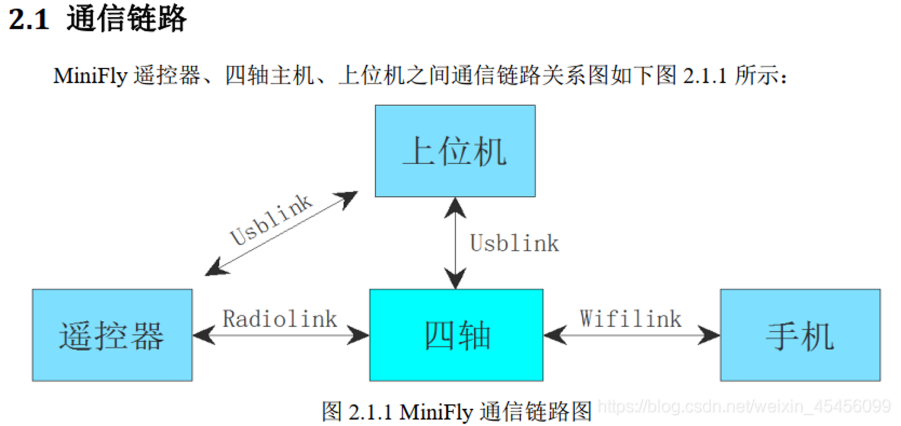
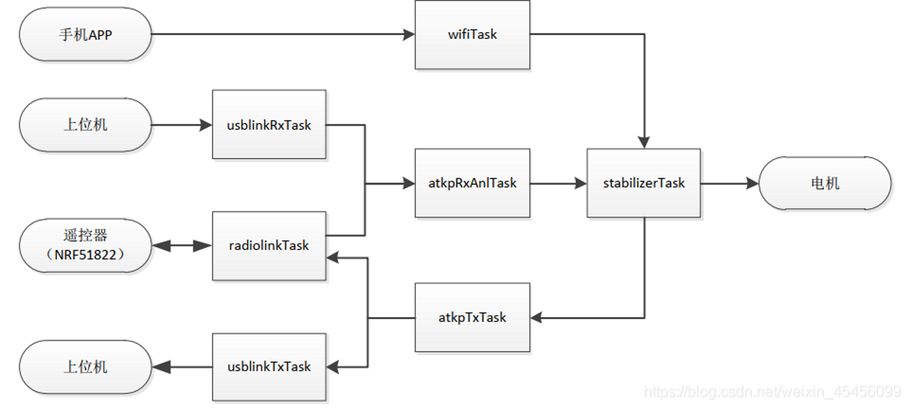
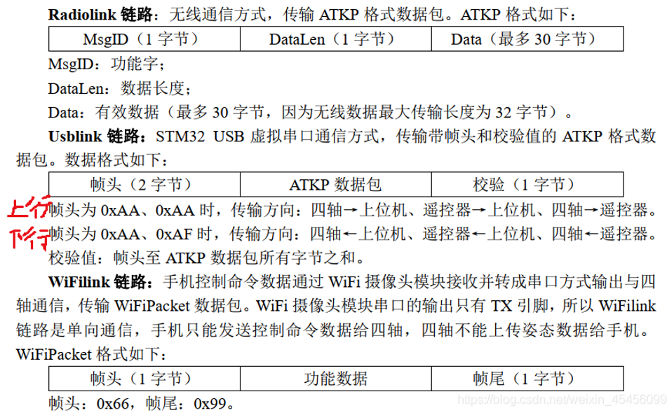
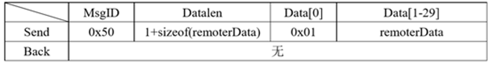
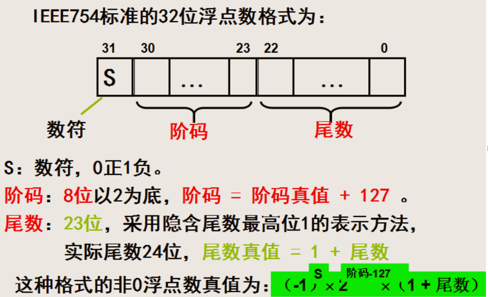
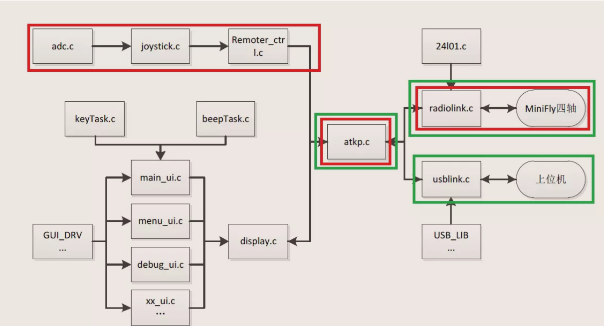

通讯链路
整体介绍
通信链路总览


atkpTxTask：ATKP 数据包发送任务。 该任务主要是获取 stabilizerTask 中的传感器数据、姿态数据、电机 PWM 输出数据等数据以定周期发送给 radiolinkTask 和 usblinkTxTask， 由这两个任务分别发送飞遥控器和上位机。
atkpRxAnlTask：ATKP 数据包接收处理任务。 该任务主要是处理遥控器和上位机发下来的数据包， 解析到的控制指令则发送到 stabilizerTask 中去。
队列

- uartslkDataDelivery队列
串口2中断接收，radiolinkTask中读取的数据 - rxQueue队列
处理指令的同时，把radiolinkTask接收的数据从rxPacket发送至rxQueue队列中
见函数atkpPacketDispatch(&rxPacket) - txQueue队列
同样在函数atkpPacketDispatch(&rxPacket)也会处理txQueue的数据，并存到txPacket打包后，通过串口DMA发送
指令格式

串口指令格式【Usblink】

指令格式：帧头(AA+AF)+功能ID+数据长度+数据+校验
校验帧头：AA+AF
功能ID: 表示该数据的意义，msgID分为 上行指令ID :upmsgID_e ；下行指令ID ：downmsgID_e,这是两个枚举变量
数据长度：dataLen
数据数组：data 最大为30，即数组长度最多30，为data[0]+data[1-29]，其中data[0]用作区别是控制命令还是控制数据。
一键起飞数据包解析举例
一键起飞帧： AA AF 50 02 00 03 AE
帧头：
1 | /*下行帧头*/---从哪里发来 |
MsgID:
1 | DOWN_REMOTER = 0x50,//指定 遥控器下行给四轴 的命令 |
02 —表示有2-1 = 1个数据
data[0] —00 —遥控数据类别：控制命令
1 | /*遥控数据类别*/ |
data[1] —03 —控制命令：起飞、降落
1 | /*下行命令/----控制命令 |
0xAE: 校验和 从帧头到数据最后一位逐字节相加，结果取最低两个字节，如AA +AF+ 50 +02 +00 +03的结果取最低两个字节等于AE。
控制数据ATKP数据帧举例
AAAF 50 1D 01 0000a040 00000000 00000000 00004842 00000000 00000000 00 00 00 00 31
帧头:
1 | 0xAA 0xAF // 下行帧头,说明是遥控器或者上位机发过来的 |
MsgID:
1 | 0x50： DOWN_REMOTOR //下行指令 |
0x1D ： 数据长度29 -1 =28 也就是结构体remoterData_t的长度，注意字节对齐。
data[0] 0x01： data[0] = 0x01，说明接下来的是控制数据。
1 | /*遥控数据类别*/ |
9个数据：
0x0000A040（send.roll = 5.0f IEEE754标准32位浮点数 小端字节序）
0x40A00000 —- 0100 0000 1010 0000 0000 0000 0000 0000 —-$(-1)^02^{129-127}(1.01) = (-1)^02^2(1.01) = 101 = 5$
//关于大小端：数据存储的大端字节序还是小端字节序取决于CPU，STM32 采用小端字节序。
0x00000000（send.pitch = 0.0f）
0x00000000（send.yaw = 0.0f）
0x00004842（send. thrust = 50.0f 50%油门）
0x42480000 —- 0100 0010 0100 1000 0000 0000 0000 0000 —-$(-1)^02^{132-127}(1.1001) = (-1)^02^5(1.1001) = 110010 = 50$
0x00000000（send. trimPitch = 0.0f trim是修正系统误差，默认0）
0x00000000（send. trimRoll = 0.0f）
0x00 （u8-CtrlMode 0x00-手动模式 0x01-定高定点模式）
0x00 （bool-FlyMode true-X模式 false-无头模式）
0x00 （bool-RCLok 解锁相关，用不上）
0x00 （1byte-字节对齐）
0x31 （前面所有字节的校验和）

代码流程图


radiolink.c
各函数作用
- void radiolinkTask(void *param)
- 该任务主要负责接收从 NRF51822 发送（串口方式）过来的数据，然后对数据进行打包和校验，打包成 ATKP 格式并校验无误后发送到 atkpRxAnlTask 的接收队列里，同时回传一帧数据给 NRF51822。
- 接收来自NRF51822的ATKP数据c，给rxState赋值【0,1,2,3,4,5】判断，每一步判断消息是否为帧头1、帧头2、ID、数据长度、数据、校验和，若全正确，则进入atkpPacketDispatch(&rxPacket)
- ATKP数据（基于于匿名科创地面站V4.34通信协议下位机）。
2，void radiolinkInit(void)
- “comm.c”中调用
- 作用：初始化串口，检测是否创建了“发送消息队列”，没有则创建，用作发消息给NRF51822等
3，static void uartSendPacket(atkp_t *p)
- 作用：把结构体atkp_t，打包ATKPPacket数据,并通过串口DMA发送->uartslkSendDataDmaBlocking(dataSize, sendBuffer);
4，static void atkpPacketDispatch(atkp_t *rxPacket)
- 断言检查，将rxPacket发送至rxQueue队列中
- 若MsgID不是关电源，开启无线数据指示灯LED_GREEN_L；
- 若有需要发送的数据，读取txQueue队列的消息，并保存在txPacket中作为缓冲区
- 若数据大小符合要求，则开启发送指示灯，将数据通过串口DMA发送
- 作用：把接收到的一个遥控无线数据包存到“接收队列”，并从“发送队列”中获取一个包，通过串口DMA发送
- 其中接收包：atkpReceivePacketBlocking(rxPacket)函数原型为atkpReceivePacketBlocking(atkp_t *p)，函数里面调用xQueueSend(rxQueue, p, portMAX_DELAY)，向“接收队列”发送消息，也就是把接收到的包发送到“接收队列”
- 其中发送包：xQueueReceive(txQueue, &txPacket, 0) == pdTRUE，从“发送队列”获取一个包，uartSendPacket(&txPacket);再通过串口发送过去
5，bool radiolinkSendPacket(const atkp_t *p)
- 作用：发送包到“发送队列”，返回发送状态
- return xQueueSend(txQueue, p, 0);//不等，发送失败则返回errQUEUE_FULL
6，bool radiolinkSendPacketBlocking(const atkp_t *p)
- 作用：发送包到“发送队列”，带阻塞
- return xQueueSend(txQueue, p, portMAX_DELAY); //一直等到
7，int radiolinkGetFreeTxQueuePackets(void)
- 作用：获取“发送队列”剩余的容量
- return (RADIOLINK_TX_QUEUE_SIZE - uxQueueMessagesWaiting(txQueue));//30-已被使用的=剩余的
代码
1 |
|
通讯协议
atkp.h
1 |
|
remoter_ctrl.h
1 | /*遥控数据类别*/ |
atpk.c
1 |
|
usblink.c
1 |
|
附录：匿名地面站协议
| 飞控->上位机 | ||||||
|---|---|---|---|---|---|---|
| 帧 | 帧头 | 功能字 | 长度 | 数据 | 校验 | 备注 |
| VER | AAAA | 00 | LEN | uint8 HardwareType硬件种类 uint16 HardwareVER100硬件版本 uint16 SoftwareVER100软件版本 uint16 ProtocolVER100协议版本 uint16 BootloaderVER100 |
SUM | 版本信息 |
| STATUS | AAAA | 01 | LEN | int16 ROL100 int16 PIT100 int16 YAW*100 int32 ALT_USE(高度cm) uint8 FLY_MODEL(飞行模式） u8 ARMED : 0加锁 1解锁 |
SUM | 飞机姿态等基本信息 |
| SENSER | AAAA | 02 | 18 | int16 ACC_X int16 ACC_Y int16 ACC_Z int16 GYRO_X int16 GYRO_Y int16 GYRO_Z int16 MAG_X int16 MAG_Y int16 MAG_Z |
SUM | 飞机传感器数据 |
| RCDATA | AAAA | 03 | 20 | int16 THR int16 YAW int16 ROL int16 PIT int16 AUX1 int16 AUX2 int16 AUX3 int16 AUX4 int16 AUX5 int16 AUX6 |
SUM | 飞机收到的控制数据 |
| GPSDATA | AAAA | 04 | LEN | 参见数据定义->当前位置信息 | SUM | 机载GPS 信息 |
| POWER | AAAA | 05 | LEN | uint16 Votage100 uint16 Current100 |
SUM | |
| MOTO | 06 | LEN | uint16 PWM_MOTO12345678 | SUM | 马达PWM(范围0- 1000) | |
| SENSER2 | AAAA | 07 | LEN | int32 ALT_BAR(推荐为cm单位) uint16 ALT_CSB(超声波高度cm) |
SUM | |
| AAAA | 08 | LEN | SUM | |||
| AAAA | 09 | LEN | SUM | |||
| FLY MODEL | AAAA | 0A | LEN | int8 AUX1_LOW_MODEL int8 AUX1_MID_MODEL int8 AUX1_HIG_MODEL int8 AUX2_LOW_MODEL int8 AUX2_MID_MODEL int8 AUX2_HIG_MODEL int8 AUX3_LOW_MODEL int8 AUX3_MID_MODEL int8 AUX3_HIG_MODEL |
SUM | 飞行模式 |
| AAAA | 0B | LEN | int16 SPEED_ROL int16 SPEED_PIT int16 SPEED_Z（单位cm） |
SUM | ||
| AAAA | 0C | LEN | SUM | |||
| AAAA | 0D | LEN | SUM | |||
| AAAA | 0E | LEN | SUM | |||
| AAAA | 0F | LEN | SUM | |||
| PID1 | AAAA | 10 | 18 | int16 PID1_P int16 PID1_I int16 PID1_D int16 PID2_P int16 PID2_I int16 PID2_D int16 PID3_P int16 PID3_I int16 PID3_D |
SUM | PID数据帧1 |
| PID2 | AAAA | 11 | 18 | int16 PID4_P int16 PID4_I int16 PID4_D int16 PID5_P int16 PID5_I int16 PID5_D int16 PID6_P int16 PID6_I int16 PID6_D |
SUM | PID数据帧2 |
| PID3 | AAAA | 12 | 18 | int16 PID7_P int16 PID7_I int16 PID7_D int16 PID8_P int16 PID8_I int16 PID8_D int16 PID9_P int16 PID9_I int16 PID9_D |
SUM | PID数据帧3 |
| PID4 | AAAA | 13 | 18 | int16 PID10_P int16 PID10_I int16 PID10_D int16 PID11_P int16 PID11_I int16 PID11_D int16 PID12_P int16 PID12_I int16 PID12_D |
SUM | PID数据帧4 |
| PID5 | AAAA | 14 | 18 | int16 PID13_P int16 PID13_I int16 PID13_D int16 PID14_P int16 PID14_I int16 PID14_D int16 PID15_P int16 PID15_I int16 PID15_D |
SUM | PID数据帧5 |
| PID6 | AAAA | 15 | 18 | int16 PID16_P int16 PID16_I int16 PID16_D int16 PID17_P int16 PID17_I int16 PID17_D int16 PID18_P int16 PID18_I int16 PID18_D |
SUM | PID数据帧6 |
| AAAA | 16 | LEN | SUM | |||
| AAAA | 17 | LEN | SUM | |||
| AAAA | LEN | SUM | ||||
| AAAA | LEN | SUM | ||||
| FP_NUM | AAAA | 20 | LEN | uing16 FP_NUM | SUM | 飞控已有航点数量 |
| FP | AAAA | 21 | LEN | 参见数据定义->航点信息 | SUM | 航点信息 |
| AAAA | LEN | SUM | ||||
| AAAA | LEN | SUM | ||||
| AAAA | LEN | SUM | ||||
| AAAA | LEN | SUM | ||||
| AAAA | LEN | SUM | ||||
| AAAA | LEN | SUM | ||||
| MSG | AAAA | EE | 7 | uint8_t MSG_ID uint8_t MSG_DATA |
SUM | MSG_ID: 01:加速度 02:陀螺仪 03:罗盘 MSG_DATA: 01:校准成功 E1:校准失败 |
| CHECK | AAAA | EF | 7 | uint8 FREAM_HEAD 帧头 uint8 CHECK_SUM 和校验 |
SUM | 比如要返回PID1数据帧的校验数据，FREAM_HEAD=0x10，CHECK_SUM=接收到PID1数据帧计算出的SUM |
| AAAA | F0 | LEN | SUM | |||
| USER_DATA | AAAA | F1 | LEN | 自定义 | SUM | 用户数据 |
| USER_DATA | AAAA | F2 | LEN | 自定义 | SUM | 用户数据 |
| USER_DATA | AAAA | F3 | LEN | 自定义 | SUM | 用户数据 |
| USER_DATA | AAAA | F4 | LEN | 自定义 | SUM | 用户数据 |
| USER_DATA | AAAA | F5 | LEN | 自定义 | SUM | 用户数据 |
| USER_DATA | AAAA | F6 | LEN | 自定义 | SUM | 用户数据 |
| USER_DATA | AAAA | F7 | LEN | 自定义 | SUM | 用户数据 |
| USER_DATA | AAAA | F8 | LEN | 自定义 | SUM | 用户数据 |
| USER_DATA | AAAA | F9 | LEN | 自定义 | SUM | 用户数据 |
| USER_DATA | AAAA | FA | LEN | 自定义 | SUM | 用户数据 |
| 上位机（遥控）->飞控 | |||||||
|---|---|---|---|---|---|---|---|
| 帧 | 帧头 | 功能字 | 长度 | 数据 | 校验 | 返回校验 | 备注 |
| CONMAND | AAAF | 01 | 1 | uint8 CMD1 | SUM | YES | 命令集合1 01：ACC校准 02：GYRO校准 04：MAG校准 05：BARO校准 20：退出6面校准 21：6面校准第1步 22：6面校准第2步 23：6面校准第3步 24：6面校准第4步 25：6面校准第5步 26：6面校准第6步 A0：飞控锁定（仅用于手机蓝牙控制） A1：飞控解锁（仅用于手机蓝牙控制） |
| ACK | AAAF | 02 | 1 | uint8 CMD2 | SUM | YES | 命令集合2 01：读取PID请求（返回AAAA 10\11\12\13\14\15数据帧） 02：读取飞行模式设置请求（返回AAAA 0A数据帧） 21：读取飞控内航点数量（返回AAAA 20数据帧） A0：读取下位机版本信息（返回AAAA 00数据帧） A1：恢复默认参数 |
| RCDATA | AAAF | 03 | 20 | int16 THR int16 YAW int16 ROL int16 PIT int16 AUX1 int16 AUX2 int16 AUX3 int16 AUX4 int16 AUX5 int16 AUX6 |
SUM | NO | 飞行控制数据(仅用于微型飞机，无刷飞机请用航模遥控控制） |
| AAAF | 04 | LEN | SUM | NO | |||
| AAAF | 05 | LEN | SUM | NO | |||
| AAAF | 06 | LEN | SUM | NO | |||
| AAAF | 07 | LEN | SUM | NO | |||
| AAAF | 08 | LEN | SUM | NO | |||
| AAAF | 09 | LEN | SUM | NO | |||
| FLY MODEL | AAAF | 0A | LEN | int8 AUX1_LOW_MODEL int8 AUX1_MID_MODEL int8 AUX1_HIG_MODEL int8 AUX2_LOW_MODEL int8 AUX2_MID_MODEL int8 AUX2_HIG_MODEL int8 AUX3_LOW_MODEL int8 AUX3_MID_MODEL int8 AUX3_HIG_MODEL |
SUM | YES | 飞行模式 |
| AAAF | 0B | LEN | SUM | ||||
| AAAF | 0C | LEN | SUM | ||||
| AAAF | 0D | LEN | SUM | ||||
| AAAF | 0E | LEN | SUM | ||||
| AAAF | 0F | LEN | SUM | ||||
| PID1 | AAAF | 10 | 18 | int16 PID1_P int16 PID1_I int16 PID1_D int16 PID2_P int16 PID2_I int16 PID2_D int16 PID3_P int16 PID3_I int16 PID3_D |
SUM | YES | PID数据帧1到6 共有18组PID，每3组PID组成一个PID数据帧，所以共6个PID数据帧 上位机会对每个PID数据帧内的数据进行判断，如果都是65535的默认值，则会跳过发送该PID数据帧 |
| PID2 | AAAF | 11 | 18 | int16 PID4_P int16 PID4_I int16 PID4_D int16 PID5_P int16 PID5_I int16 PID5_D int16 PID6_P int16 PID6_I int16 PID6_D |
SUM | YES | |
| PID3 | AAAF | 12 | 18 | int16 PID7_P int16 PID7_I int16 PID7_D int16 PID8_P int16 PID8_I int16 PID8_D int16 PID9_P int16 PID9_I int16 PID9_D |
SUM | YES | |
| PID4 | AAAF | 13 | 18 | int16 PID10_P int16 PID10_I int16 PID10_D int16 PID11_P int16 PID11_I int16 PID11_D int16 PID12_P int16 PID12_I int16 PID12_D |
SUM | YES | |
| PID5 | AAAF | 14 | 18 | int16 PID13_P int16 PID13_I int16 PID13_D int16 PID14_P int16 PID14_I int16 PID14_D int16 PID15_P int16 PID15_I int16 PID15_D |
SUM | YES | |
| PID6 | AAAF | 15 | 18 | int16 PID16_P int16 PID16_I int16 PID16_D int16 PID17_P int16 PID17_I int16 PID17_D int16 PID18_P int16 PID18_I int16 PID18_D |
SUM | YES | |
| AAAF | 16 | LEN | SUM | ||||
| AAAF | 17 | LEN | SUM | ||||
| AAAF | LEN | SUM | |||||
| AAAF | LEN | SUM | |||||
| READ_FP | AAAF | 20 | LEN | uint16 FP_CNT | SUM | 读取第CNT个航点信息 | |
| FP | AAAF | 21 | LEN | 参见数据定义->航点信息 | SUM | YES | 写入航点信息 |
| AAAF | LEN | SUM | |||||
| AAAF | LEN | SUM | |||||
| AAAF | LEN | SUM | |||||
| AAAF | LEN | SUM | |||||
| AAAF | LEN | SUM | |||||
| CAM CONTROL | AAAF | 80 | 13 | uint8 OBJ1_OK =1可用=0不可用 uint16 OBJ1_X uint16 OBJ1_Y uint8 OBJ2_OK uint16 OBJ2_X uint16 OBJ2_Y uint8 ALT_OK uint16 ALT | SUM | NO | 摄像头控制数据 OBJ1用于定位 OBJ2用于计算航向 ALT为高度数据 |
| AAAF | LEN | SUM | |||||
| AAAF | LEN | SUM | |||||
| IAP | AAAF | F0 | LEN | uint16 BOOT_STA | SUM | NO | 立即进入IAP功能： BOOT_STA=0xFFFA |
| AAAF | LEN | SUM | |||||
| AAAF | LEN | SUM |